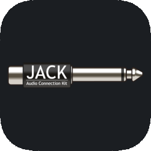

How to Install JACK on macOS in 2026
This guide gives a clear explanation on how to install JACK2 (current release: 1.9.22) on any recent Mac in about two minutes.
It covers both Apple Silicon and Intel, with several methods:
- a one-click method with a notarized installer (fastest / easiest)
- the official package
- Homebrew
JACK (JACK Audio Connection Kit) is a low-latency audio server. It lets you connect the inputs and outputs of audio applications to each other and to your audio interface, like patching cables in a studio.
Most JACK-on-Mac tutorials still online date from the JackOSX era (macOS 10.x, Intel only, JackRouter). Much of what they describe no longer exists. On the contrary, this page is kept up to date, with a clear explanation on how to install it smoothly in 2026.
Last updated: October 2026 · Tested on: macOS 15 Sequoia and later, Apple Silicon (M1–M5) and Intel.
Before you start
You need a Mac and an administrator account. Nothing else!
One thing has changed for good: the old JackRouter driver, which let any Mac app send audio into JACK, is no longer included.
See Next steps for its modern replacement (JackMoebius).
Option 1: One click from JackMate (easiest)
- Download JackMate and open it.
- If JACK is not installed, JackMate instantly shows an “install JACK” panel. Choose the
.pkgmethod (marked Recommended). - JackMate automatically downloads the notarized installer and opens it. Follow the installer steps.
That’s it!
No Gatekeeper warning, no Rosetta. JackMate then detects JACK and is instantly ready to start the server.
If a newer official release ever supersedes this one, JackMate points you to it automatically.
Option 2: Standalone notarized installer
On recent macOS, the official package has two rough edges: it is not yet notarized (Gatekeeper blocks it on first open with a scary message), and its installer asks to install Rosetta 2 on Apple Silicon, even though the JACK binaries inside are already universal.
The notarized installer fixes both: it is signed, notarized by Apple, and universal, so it just opens and installs as it should!
If you just want JACK on its own without any graphical app like JackMate, then:
Open the notarized JACK2 1.9.22 release and download
jack2-1.9.22-universal-notarized.pkg.Open it and follow the installer steps: this is the exact same installer as the one used in the one-click method in JackMate.
Confirm the server is found:
which jackd
If a path is printed, JACK is installed!
It repackages the official JACK2 1.9.22 universal binaries (from jack2-releases), re-signed with an Apple Developer ID, notarized by Apple, with the installer’s architecture flag corrected so it no longer requires Rosetta.
The binaries themselves are not recompiled, and it uses the same package identifier as the official one, so it installs and upgrades exactly like it. It is an independent convenience build, not affiliated with or endorsed by the JACK project.
Provenance and checksums are on the release page.
Option 3: Official installer
The upstream package from jackaudio.org installs the exact same JACK server and command tools as the previous one, with the aforementioned rough edges for beginners.
It also includes QjackCtl (a graphical control panel originally developed for Linux, which has a long history with Jack, but unfortunately does not follow macOS design conventions due to its multi-platform target).

Open the JACK downloads page.
Under macOS, download the Universal package. Older builds are listed on the jack2-releases page.
Open the downloaded package and follow the installer steps.
Two things to expect on recent macOS, because this build is not notarized and its installer is flagged Intel-only:
- Gatekeeper warning. Go to System Settings → Privacy & Security, scroll down and click Open Anyway (since macOS Sequoia, the old right-click → Open shortcut no longer bypasses this).
Advanced users can instead clear the quarantine flag:
xattr -d com.apple.quarantine /path/to/jack2-osx-1.9.22.pkg.- Rosetta 2 prompt on Apple Silicon. You can accept it (Rosetta installs once), but note that recent Macs do not ship with Rosetta and Apple is phasing it out (available through macOS 27, then limited). The fix for this is already in JACK’s source and a future official release is expected to be signed; until then, Options 1 and 2 avoid both issues.
Confirm the server is found:
which jackd
Option 4: Homebrew
The Homebrew jack formula installs JACK2 1.9.22, with native builds for Apple Silicon and Intel.
If you already have Homebrew installed on your Mac, just type:
brew install jackTwo differences with the package installers:
The formula installs the
jackdserver but not the command-line tools such asjack_lsporjack_connect.QjackCtl is a separate formula:
brew install qjackctl. If you prefer using JackMate, just Download JackMate here.
Next steps
Now that JACK is installed on your Mac, two everyday needs remain: controlling it without Terminal, and getting ordinary Mac apps into it.
Control JACK without the command line: JackMate.
JackMate is a native macOS app that starts and stops the JACK server, sets device, sample rate and buffer, and shows a patchbay to connect ports. If you used Option 1, you already have it. See JackMate
Route any Mac app into JACK: JackMoebius
JackRouter is broken since macOS Catalina (2019) and removed from the JACK installer since 2020. So before JackMoebius was released, apps like Safari, Zoom, Spotify or your DAW could not reach JACK on their own any more. Since 2026 JackMoebius release, it’s possible again! JackMoebius is a CoreAudio driver that appears as a regular audio device: select it in any app, and its audio shows up as JACK ports. It works hand in hand with JackMate. See JackMoebius
FAQ
Is the notarized installer safe / official?
It is signed with an Apple Developer ID and notarized by Apple (so macOS vouches that it is free of known malware), and it contains the exact official JACK2 1.9.22 universal binaries, only re-signed. It is a convenience build, not an official JACK project release; its provenance is documented on the release page.
Does JACK work on Apple Silicon (M1, M2, M3, M4, M5, A18 Pro)?
Yes. All installers above are universal, with native Apple Silicon code, including the ones used for MacBook Neo.
Does JACK work on the most recent macOS versions?
Yes. The notarized universal package installs cleanly on Sonoma, Sequoia, Tahoe, and Golden Gate versions, both for Intel and Apple Silicon. Homebrew also provides builds from Sonoma.
What happened to JackRouter?
It was dropped from the macOS installers in JACK2 1.9.15 because it no longer worked on macOS from Catalina. JackMoebius fills that role today.
Is JACK free?
Yes. JACK is open source (GPL for the server, LGPL for the library).
Do I still need QjackCtl?
No, it is optional. Any JACK control app, such as JackMate, can replace it.